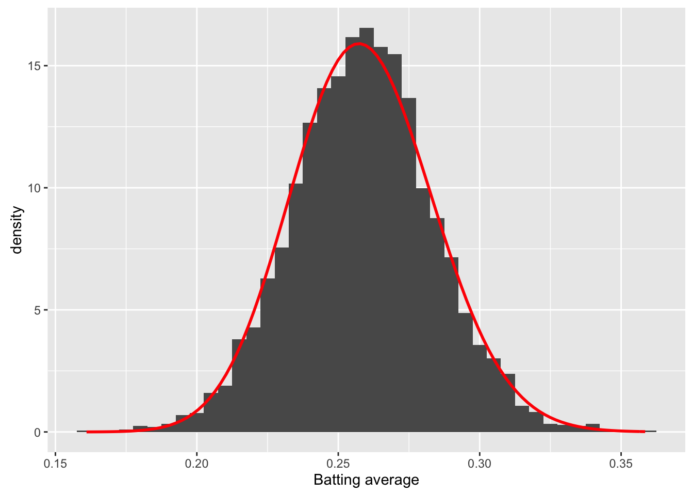
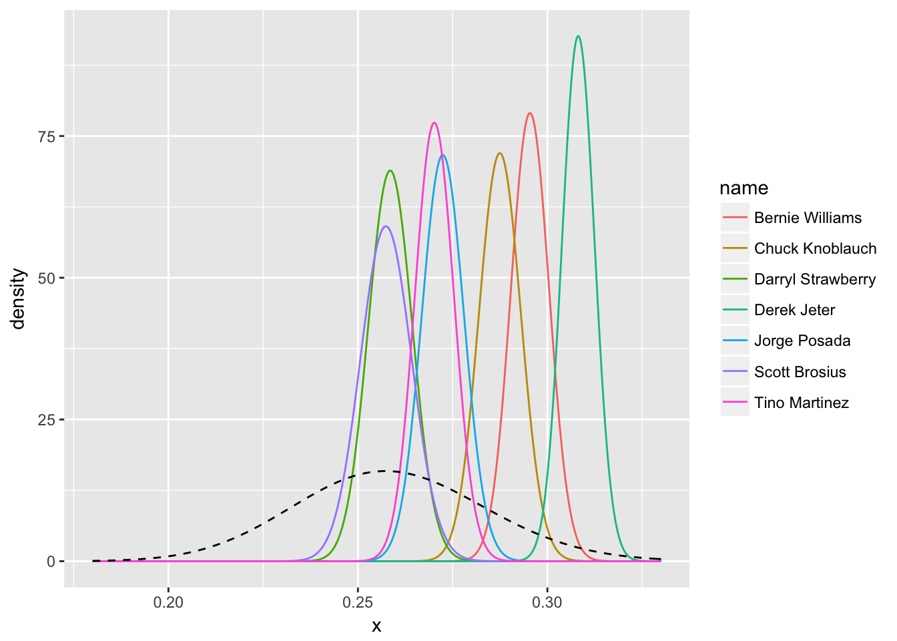
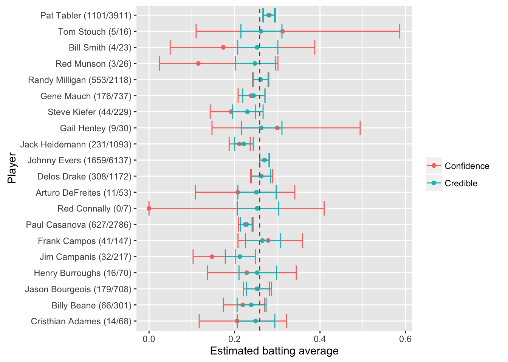
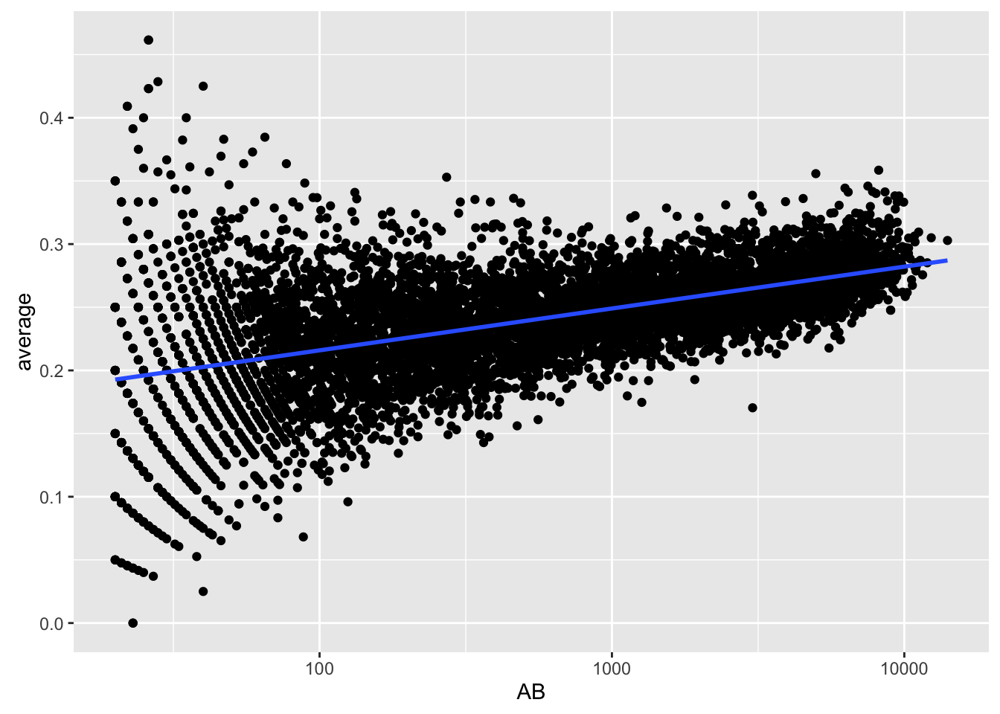
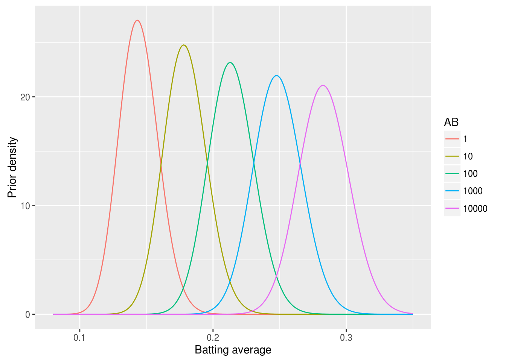
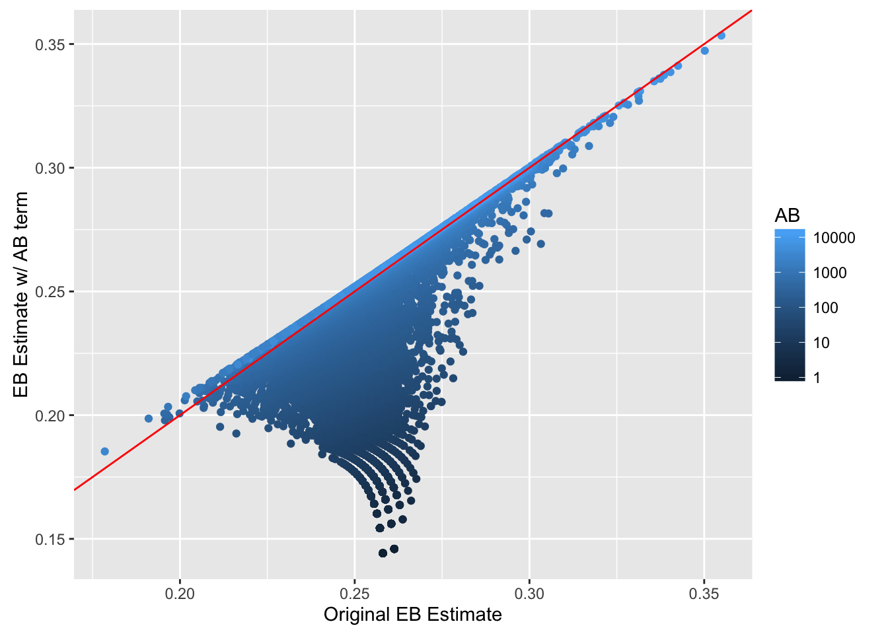

笔记 19 贝叶斯统计
19.1 贝塔分布
贝塔分布的本质是概率分布的分布
棒球击球率的预测问题，你不可能预测一个刚打出本垒下一个也击中，会有一个先验概率
这个概率可以用一个参数 \(\alpha\) 与 \(\beta\) 的贝塔分布来描述，例如一共打了300个球，81个击中，219个击空，那么 \(\alpha\) 为81，\(\beta\) 为219
均值为\(\frac{\alpha}{\alpha + \beta} = \frac{81}{81+219} = 0.27\)
概率密度分布图，从图上我们可以看出一个大约在0.2-0.35的概率区间，表示击球的先验概率空间可能的取值
library(ggplot2)
x <- seq(0,1,length=100)
db <- dbeta(x, 81, 219)
ggplot() + geom_line(aes(x,db)) + ylab("Density of beta")
19.2 为什么击球的概率分布符合贝塔分布？
- 设想球员A打了一个球打中了，那么在没有先验知识的情况下我会认为他击中概率为1
- 这个球员又打中了一个球，那么还是1
- 但第三个没打中，我们会认为他击中概率是0吗？
- 一般而言，这类连续击球问题可以用二项分布来描述，例如10个球打中8个的概率，我们假设这个击球概率为q，那么这个概率应该是个q的函数：
\[f(q) \propto q^a(1-q)^b\]
- q对于一个实际问题是确定的常数，所以出现这个场景的概率实际上是a与b的函数
- 为了保障这个概率函数累积为1，需要除一个跟a与b有关的数
- 这个数可以用贝塔函数\(B(a,b)\)来表示，数学证明略
- 如果接着打了一个中了，那么如何更新这个概率？
- 根据贝叶斯公式，最后推导出的结果如下：
\[Beta(\alpha+1,\beta+0)\]
- 那么我们对这个击球率的估计就略高了一点，这是贝塔分布的神奇之处，形式非常简单，理解也很直观
19.3 先验与后验
- 如果我们后续观察的击球少，那么不太容易影响到对概率的先验估计
x <- seq(0,1,length=100)
db <- dbeta(x, 81+1, 219)
ggplot() + geom_line(aes(x,db)) + ylab("Density of beta")
- 如果后续观察了大量的击球都中了，那么概率会偏向后面数据量的那一部分
x <- seq(0,1,length=100)
db <- dbeta(x, 81+1000, 219)
ggplot() + geom_line(aes(x,db)) + ylab("Density of beta")
这是贝叶斯分析的核心思想，通过证据更新经验
最后得到的均值（后验0.83）一定是介于经验值（先验0.27）与证据值（全击中就是1）之间
贝塔分布天然适合描述一个对概率的估计场景
另一种不那么严谨的理解方法是如果一个概率是稳定的，那么多次实验的结果差别不会太大，则有：
\[\frac{a}{b} = \frac{c}{d} = \frac{a+b}{c+d}\]
- 如果每次实验的概率持平，那么不存在不确定度；但如果前面实验的次数少而后面实验的次数多，那么概率会偏重于后面，这就是贝塔分布想说明的事
19.4 经验贝叶斯
对于两个球员，一个打了10个球中了4个，另一个打了1000个球中了300个，一般击中概率0.2，你会选哪一个？
我们对于小样本量的统计推断会有天然的不信任，如何通过统计量来描述？
下面用MLB的数据说明，首先提取出球员的击球数据：
library(knitr)
library(dplyr)
library(tidyr)
library(Lahman)
# 拿到击球数据
career <- Batting %>%
filter(AB > 0) %>%
anti_join(Pitching, by = "playerID") %>%
group_by(playerID) %>%
summarize(H = sum(H), AB = sum(AB)) %>%
mutate(average = H / AB)
# 把ID换成球员名字
career <- Master %>%
tbl_df() %>%
select(playerID, nameFirst, nameLast) %>%
unite(name, nameFirst, nameLast, sep = " ") %>%
inner_join(career, by = "playerID") %>%
select(-playerID)
# 展示数据
career## # A tibble: 9,429 × 4
## name H AB average
## <chr> <int> <int> <dbl>
## 1 Hank Aaron 3771 12364 0.3050
## 2 Tommie Aaron 216 944 0.2288
## 3 Andy Abad 2 21 0.0952
## 4 John Abadie 11 49 0.2245
## 5 Ed Abbaticchio 772 3044 0.2536
## 6 Fred Abbott 107 513 0.2086
## 7 Jeff Abbott 157 596 0.2634
## 8 Kurt Abbott 523 2044 0.2559
## 9 Ody Abbott 13 70 0.1857
## 10 Frank Abercrombie 0 4 0.0000
## # ... with 9,419 more rows# 击球前5
career %>%
arrange(desc(average)) %>%
head(5) %>%
kable()| name | H | AB | average |
|---|---|---|---|
| Jeff Banister | 1 | 1 | 1 |
| Doc Bass | 1 | 1 | 1 |
| Steve Biras | 2 | 2 | 1 |
| C. B. Burns | 1 | 1 | 1 |
| Jackie Gallagher | 1 | 1 | 1 |
# 击球后5
career %>%
arrange(average) %>%
head(5) %>%
kable()| name | H | AB | average |
|---|---|---|---|
| Frank Abercrombie | 0 | 4 | 0 |
| Lane Adams | 0 | 3 | 0 |
| Horace Allen | 0 | 7 | 0 |
| Pete Allen | 0 | 4 | 0 |
| Walter Alston | 0 | 1 | 0 |
如果仅考虑击球率会把很多板凳球员与运气球员包括进来，一个先验概率分布很有必要
那么考虑下如何得到，经验贝叶斯方法认为如果估计一个个体的参数，那么这个个体所在的整体的概率分布可作为先验概率分布
这个先验概率分布可以直接从数据中得到，然后我们要用极大似然或矩估计的方法拿到贝塔分布的两个参数：
career_filtered <- career %>%
filter(AB >= 500)
m <- MASS::fitdistr(career_filtered$average, dbeta,
start = list(shape1 = 1, shape2 = 10))
alpha0 <- m$estimate[1]
beta0 <- m$estimate[2]
# 看下拟合效果
ggplot(career_filtered) +
geom_histogram(aes(average, y = ..density..), binwidth = .005) +
stat_function(fun = function(x) dbeta(x, alpha0, beta0), color = "red",
size = 1) +
xlab("Batting average")
19.5 从整体到个人
当我们估计个人的击球率时，整体可以作为先验函数，个人的数据可以通过贝塔分布更新到个体
那么如果一个人数据少，我们倾向于认为他是平均水平；数据多则认为符合个人表现
这事实上是一个分层结构，贝叶斯推断里隐含了这么一个从整体到个人的过程
career_eb <- career %>%
mutate(eb_estimate = (H + alpha0) / (AB + alpha0 + beta0))
# 击球率高
career_eb %>%
arrange(desc(eb_estimate)) %>%
head(5) %>%
kable()| name | H | AB | average | eb_estimate |
|---|---|---|---|---|
| Rogers Hornsby | 2930 | 8173 | 0.358 | 0.355 |
| Shoeless Joe Jackson | 1772 | 4981 | 0.356 | 0.350 |
| Ed Delahanty | 2596 | 7505 | 0.346 | 0.343 |
| Billy Hamilton | 2158 | 6268 | 0.344 | 0.340 |
| Harry Heilmann | 2660 | 7787 | 0.342 | 0.338 |
# 击球率低
career_eb %>%
arrange(eb_estimate) %>%
head(5) %>%
kable()| name | H | AB | average | eb_estimate |
|---|---|---|---|---|
| Bill Bergen | 516 | 3028 | 0.170 | 0.178 |
| Ray Oyler | 221 | 1265 | 0.175 | 0.191 |
| John Vukovich | 90 | 559 | 0.161 | 0.196 |
| John Humphries | 52 | 364 | 0.143 | 0.196 |
| George Baker | 74 | 474 | 0.156 | 0.196 |
# 整体估计
ggplot(career_eb, aes(average, eb_estimate, color = AB)) +
geom_hline(yintercept = alpha0 / (alpha0 + beta0), color = "red", lty = 2) +
geom_point() +
geom_abline(color = "red") +
scale_colour_gradient(trans = "log", breaks = 10 ^ (1:5)) +
xlab("Batting average") +
ylab("Empirical Bayes batting average")
数据点多会收缩到\(x=y\)，也就是个人的击球率；数据点少则回归到整体击球率
这就是经验贝叶斯方法的全貌：先估计整体的参数，然后把整体参数作为先验概率估计个人参数
19.6 可信区间与置信区间
经验贝叶斯可以给出点估计，但现实中我们可能更关心区间估计
一般这类区间估计可以用二项式比例估计来进行，不过没有先验经验的限制置信区间大到没意义
经验贝叶斯会给出一个后验分布，这个分布可以用来求可信区间
# 给出后验分布
career <- Batting %>%
filter(AB > 0) %>%
anti_join(Pitching, by = "playerID") %>%
group_by(playerID) %>%
summarize(H = sum(H), AB = sum(AB)) %>%
mutate(average = H / AB)
career <- Master %>%
tbl_df() %>%
select(playerID, nameFirst, nameLast) %>%
unite(name, nameFirst, nameLast, sep = " ") %>%
inner_join(career, by = "playerID")
career_eb <- career %>%
mutate(eb_estimate = (H + alpha0) / (AB + alpha0 + beta0))
career_eb <- career_eb %>%
mutate(alpha1 = H + alpha0,
beta1 = AB - H + beta0)
# 提取洋基队的数据
yankee_1998 <- c("brosisc01", "jeterde01", "knoblch01", "martiti02", "posadjo01", "strawda01", "willibe02")
yankee_1998_career <- career_eb %>%
filter(playerID %in% yankee_1998)
# 展示球员的后验分布
library(broom)
yankee_beta <- yankee_1998_career %>%
inflate(x = seq(.18, .33, .0002)) %>%
ungroup() %>%
mutate(density = dbeta(x, alpha1, beta1))
ggplot(yankee_beta, aes(x, density, color = name)) +
geom_line() +
stat_function(fun = function(x) dbeta(x, alpha0, beta0),
lty = 2, color = "black")
# 提取可信区间
yankee_1998_career <- yankee_1998_career %>%
mutate(low = qbeta(.025, alpha1, beta1),
high = qbeta(.975, alpha1, beta1))
yankee_1998_career %>%
select(-alpha1, -beta1, -eb_estimate) %>%
knitr::kable()| playerID | name | H | AB | average | low | high |
|---|---|---|---|---|---|---|
| brosisc01 | Scott Brosius | 1001 | 3889 | 0.257 | 0.244 | 0.271 |
| jeterde01 | Derek Jeter | 3465 | 11195 | 0.310 | 0.300 | 0.317 |
| knoblch01 | Chuck Knoblauch | 1839 | 6366 | 0.289 | 0.277 | 0.298 |
| martiti02 | Tino Martinez | 1925 | 7111 | 0.271 | 0.260 | 0.280 |
| posadjo01 | Jorge Posada | 1664 | 6092 | 0.273 | 0.262 | 0.283 |
| strawda01 | Darryl Strawberry | 1401 | 5418 | 0.259 | 0.247 | 0.270 |
| willibe02 | Bernie Williams | 2336 | 7869 | 0.297 | 0.286 | 0.305 |
# 绘制可信区间
yankee_1998_career %>%
mutate(name = reorder(name, average)) %>%
ggplot(aes(average, name)) +
geom_point() +
geom_errorbarh(aes(xmin = low, xmax = high)) +
geom_vline(xintercept = alpha0 / (alpha0 + beta0), color = "red", lty = 2) +
xlab("Estimated batting average (w/ 95% interval)") +
ylab("Player")
# 对比置信区间与可信区间
career_eb <- career_eb %>%
mutate(low = qbeta(.025, alpha1, beta1),
high = qbeta(.975, alpha1, beta1))
set.seed(2016)
some <- career_eb %>%
sample_n(20) %>%
mutate(name = paste0(name, " (", H, "/", AB, ")"))
frequentist <- some %>%
group_by(playerID, name, AB) %>%
do(tidy(binom.test(.$H, .$AB))) %>%
select(playerID, name, estimate, low = conf.low, high = conf.high) %>%
mutate(method = "Confidence")
bayesian <- some %>%
select(playerID, name, AB, estimate = eb_estimate,
low = low, high = high) %>%
mutate(method = "Credible")
combined <- bind_rows(frequentist, bayesian)
combined %>%
mutate(name2 = reorder(name, -AB)) %>%
ggplot(aes(estimate, name2, color = method, group = method)) +
geom_point() +
geom_errorbarh(aes(xmin = low, xmax = high)) +
geom_vline(xintercept = alpha0 / (alpha0 + beta0), color = "red", lty = 2) +
xlab("Estimated batting average") +
ylab("Player") +
labs(color = "")
- 可信区间与置信区间很大的区别在于前者考虑了先验概率进而实现了区间的收缩，后者则可看作无先验贝塔分布给出的区间估计，频率学派目前没有很好的收缩区间估计的方法
19.7 后验错误率
- 现实问题经常不局限于估计，而是侧重决策，例如如果一个球员的击球率高于某个值，他就可以进入名人堂（击球率大于0.3），这个决策常常伴随区间估计而不是简单的点估计
# 以 Hank Aaron 为例
career_eb %>%
filter(name == "Hank Aaron") %>%
do(data_frame(x = seq(.27, .33, .0002),
density = dbeta(x, .$alpha1, .$beta1))) %>%
ggplot(aes(x, density)) +
geom_line() +
geom_ribbon(aes(ymin = 0, ymax = density * (x < .3)),
alpha = .1, fill = "red") +
geom_vline(color = "red", lty = 2, xintercept = .3)
# 提取该球员数据
career_eb %>% filter(name == "Hank Aaron")## # A tibble: 1 × 10
## playerID name H AB average eb_estimate alpha1 beta1 low
## <chr> <chr> <int> <int> <dbl> <dbl> <dbl> <dbl> <dbl>
## 1 aaronha01 Hank Aaron 3771 12364 0.305 0.304 3850 8819 0.296
## # ... with 1 more variables: high <dbl># 计算其不进入名人堂的概率
pbeta(.3, 3850, 8818)## [1] 0.169后验错误率（Posterior Error Probability）可类比经典假设检验中的显著性水平\(\alpha\)
后验包括率（Posterior Inclusion Probability）可类比经典假设检验中的置信水平\(1-\alpha\)
# 所有球员的后验错误率分布，大部分不超过0.3
career_eb <- career_eb %>%
mutate(PEP = pbeta(.3, alpha1, beta1))
ggplot(career_eb, aes(PEP)) +
geom_histogram(binwidth = .02) +
xlab("Posterior Error Probability (PEP)") +
xlim(0, 1)
# 后验错误率与击球率的关系
career_eb %>%
ggplot(aes(eb_estimate, PEP, color = AB)) +
geom_point(size = 1) +
xlab("(Shrunken) batting average estimate") +
ylab("Posterior Error Probability (PEP)") +
geom_vline(color = "red", lty = 2, xintercept = .3) +
scale_colour_gradient(trans = "log", breaks = 10 ^ (1:5))
- 后验错误率高于0.3的多数是击球率与击球数都高的人，因为贝叶斯方法惩罚了击球数低的人
19.8 错误发现率（FDR）
FDR可用来控制一个整体决策，保证整体犯错的概率低于某个数值，错误发现率越高，越可能把假阳性包括进来
假如我们把进入名人堂的决策作为一个整体，则可允许一定的整体错误率，因为每个人的后验错误率可以计算且期望值线性可加和，我们可以得到一个整体的错误率
# 取前100个球员
top_players <- career_eb %>%
arrange(PEP) %>%
head(100)
# 总错率率
sum(top_players$PEP)## [1] 5# 平均错误率
mean(top_players$PEP)## [1] 0.05# 错误率随所取球员的变化
sorted_PEP <- career_eb %>%
arrange(PEP)
mean(head(sorted_PEP$PEP, 50))## [1] 0.00183mean(head(sorted_PEP$PEP, 200))## [1] 0.246- 错误率在排序后前面低后面高，但这个错误率不特指某个球员，而是包含到某个球员的整体犯错的概率
19.9 q值
- q值定义为排序后累积到某个样本的整体平均错误率，类似多重比较中对整体错误率控制的p值
# 生成每个球员的q值
career_eb <- career_eb %>%
arrange(PEP) %>%
mutate(qvalue = cummean(PEP))
# 观察不同q值对名人堂球员数的影响
career_eb %>%
ggplot(aes(qvalue, rank(PEP))) +
geom_line() +
xlab("q-value cutoff") +
ylab("Number of players included")
# 观察小q值部分
career_eb %>%
filter(qvalue < .25) %>%
ggplot(aes(qvalue, rank(PEP))) +
geom_line() +
xlab("q-value cutoff") +
ylab("Number of players included")
200个人进入名人堂可能有1/4的球员不合适，如果是50个人进入名人堂那么基本不会犯错
q值是一个整体而非个体的平均错误率，具有累积性，不代表q值大的那一个就是错的
q值在频率学派的多重比较里也有定义，虽然没有空假设（有先验概率），但实质等同
19.10 贝叶斯视角的假设检验
前面描述的是击球率如何求，如何进行区间估计与多个体的错误率控制，面向的个体或整体，那么如何解决比较问题
设想多个球员，我们考虑如何去比较他们击球率
# 选三个球员
career_eb %>%
filter(name %in% c("Hank Aaron", "Mike Piazza", "Hideki Matsui")) %>%
inflate(x = seq(.26, .33, .00025)) %>%
mutate(density = dbeta(x, alpha1, beta1)) %>%
ggplot(aes(x, density, color = name)) +
geom_line() +
labs(x = "Batting average", color = "")
如果两个球员击球率的概率密度曲线比较接近，那么即便均值有不同我们也无法进行区分；如果重叠比较少，那么我们有理由认为他们之间的差异显著
贝叶斯视角下如何定量描述这个差异是否显著？
19.10.1 模拟
- 单纯取样比大小然后计算比例
# 提取两人数据
aaron <- career_eb %>% filter(name == "Hank Aaron")
piazza <- career_eb %>% filter(name == "Mike Piazza")
# 模拟取样10万次
piazza_simulation <- rbeta(1e6, piazza$alpha1, piazza$beta1)
aaron_simulation <- rbeta(1e6, aaron$alpha1, aaron$beta1)
# 计算一个人超过另一个人的概率
sim <- mean(piazza_simulation > aaron_simulation)
sim## [1] 0.60619.10.2 数值积分
- 两个概率的联合概率分布，然后积分一个队员大于另一个的概率
d <- .00002
limits <- seq(.29, .33, d)
sum(outer(limits, limits, function(x, y) {
(x > y) *
dbeta(x, piazza$alpha1, piazza$beta1) *
dbeta(y, aaron$alpha1, aaron$beta1) *
d ^ 2
}))## [1] 0.60419.10.3 解析解
- 两个贝塔分布一个比另一个高是有含有贝塔函数的解析解的：
\[p_A \sim \mbox{Beta}(\alpha_A, \beta_A)\]
\[p_B \sim \mbox{Beta}(\alpha_B, \beta_B)\]
\[{\rm Pr}(p_B > p_A) = \sum_{i=0}^{\alpha_B-1}\frac{B(\alpha_A+i,\beta_A+\beta_B)}{(\beta_B+i) B(1+i, \beta_B) B(\alpha_A, \beta_A) }\]
h <- function(alpha_a, beta_a,
alpha_b, beta_b) {
j <- seq.int(0, round(alpha_b) - 1)
log_vals <- (lbeta(alpha_a + j, beta_a + beta_b) - log(beta_b + j) -
lbeta(1 + j, beta_b) - lbeta(alpha_a, beta_a))
1 - sum(exp(log_vals))
}
h(piazza$alpha1, piazza$beta1,
aaron$alpha1, aaron$beta1)## [1] 0.60519.10.4 正态近似求解
- 贝塔分布在\(\alpha\)与\(\beta\)比较大时接近正态分布，可以直接用正态分布的解析解求，速度快很多
h_approx <- function(alpha_a, beta_a,
alpha_b, beta_b) {
u1 <- alpha_a / (alpha_a + beta_a)
u2 <- alpha_b / (alpha_b + beta_b)
var1 <- alpha_a * beta_a / ((alpha_a + beta_a) ^ 2 * (alpha_a + beta_a + 1))
var2 <- alpha_b * beta_b / ((alpha_b + beta_b) ^ 2 * (alpha_b + beta_b + 1))
pnorm(0, u2 - u1, sqrt(var1 + var2))
}
h_approx(piazza$alpha1, piazza$beta1, aaron$alpha1, aaron$beta1)## [1] 0.60619.11 比例检验
- 这是个列联表问题，频率学派对比两个比例
two_players <- bind_rows(aaron, piazza)
two_players %>%
transmute(Player = name, Hits = H, Misses = AB - H) %>%
knitr::kable()| Player | Hits | Misses |
|---|---|---|
| Hank Aaron | 3771 | 8593 |
| Mike Piazza | 2127 | 4784 |
prop.test(two_players$H, two_players$AB)##
## 2-sample test for equality of proportions with continuity
## correction
##
## data: two_players$H out of two_players$AB
## X-squared = 0.1, df = 1, p-value = 0.7
## alternative hypothesis: two.sided
## 95 percent confidence interval:
## -0.0165 0.0109
## sample estimates:
## prop 1 prop 2
## 0.305 0.308- 贝叶斯学派对比两个比例
credible_interval_approx <- function(a, b, c, d) {
u1 <- a / (a + b)
u2 <- c / (c + d)
var1 <- a * b / ((a + b) ^ 2 * (a + b + 1))
var2 <- c * d / ((c + d) ^ 2 * (c + d + 1))
mu_diff <- u2 - u1
sd_diff <- sqrt(var1 + var2)
data_frame(posterior = pnorm(0, mu_diff, sd_diff),
estimate = mu_diff,
conf.low = qnorm(.025, mu_diff, sd_diff),
conf.high = qnorm(.975, mu_diff, sd_diff))
}
credible_interval_approx(piazza$alpha1, piazza$beta1, aaron$alpha1, aaron$beta1)## # A tibble: 1 × 4
## posterior estimate conf.low conf.high
## <dbl> <dbl> <dbl> <dbl>
## 1 0.606 -0.00182 -0.0151 0.0115- 多个球员对比一个
set.seed(2016)
intervals <- career_eb %>%
filter(AB > 10) %>%
sample_n(20) %>%
group_by(name, H, AB) %>%
do(credible_interval_approx(piazza$alpha1, piazza$beta1, .$alpha1, .$beta1)) %>%
ungroup() %>%
mutate(name = reorder(paste0(name, " (", H, " / ", AB, ")"), -estimate))
f <- function(H, AB) broom::tidy(prop.test(c(H, piazza$H), c(AB, piazza$AB)))
prop_tests <- purrr::map2_df(intervals$H, intervals$AB, f) %>%
mutate(estimate = estimate1 - estimate2,
name = intervals$name)
all_intervals <- bind_rows(
mutate(intervals, type = "Credible"),
mutate(prop_tests, type = "Confidence")
)
ggplot(all_intervals, aes(x = estimate, y = name, color = type)) +
geom_point() +
geom_errorbarh(aes(xmin = conf.low, xmax = conf.high)) +
xlab("Piazza average - player average") +
ylab("Player")
- 置信区间与可信区间的主要差异来自于经验贝叶斯的区间收敛
19.12 错误率控制
如果我打算交易一个球员，那么如何筛选候选人？
先选那些击球率更好的球员
# 对比打算交易的球员与其他球员
career_eb_vs_piazza <- bind_cols(
career_eb,
credible_interval_approx(piazza$alpha1, piazza$beta1,
career_eb$alpha1, career_eb$beta1)) %>%
select(name, posterior, conf.low, conf.high)
career_eb_vs_piazza## # A tibble: 9,429 × 4
## name posterior conf.low conf.high
## <chr> <dbl> <dbl> <dbl>
## 1 Rogers Hornsby 2.84e-11 0.0345 0.0639
## 2 Ed Delahanty 7.10e-07 0.0218 0.0518
## 3 Shoeless Joe Jackson 8.77e-08 0.0278 0.0611
## 4 Willie Keeler 4.62e-06 0.0183 0.0472
## 5 Nap Lajoie 1.62e-05 0.0158 0.0441
## 6 Tony Gwynn 1.83e-05 0.0157 0.0442
## 7 Harry Heilmann 7.19e-06 0.0180 0.0476
## 8 Lou Gehrig 1.43e-05 0.0167 0.0461
## 9 Billy Hamilton 7.03e-06 0.0190 0.0503
## 10 Eddie Collins 2.00e-04 0.0113 0.0393
## # ... with 9,419 more rows# 计算q值
career_eb_vs_piazza <- career_eb_vs_piazza %>%
arrange(posterior) %>%
mutate(qvalue = cummean(posterior))
# 筛选那些q值小于0.05的
better <- career_eb_vs_piazza %>%
filter(qvalue < .05)
better## # A tibble: 49 × 5
## name posterior conf.low conf.high qvalue
## <chr> <dbl> <dbl> <dbl> <dbl>
## 1 Rogers Hornsby 2.84e-11 0.0345 0.0639 2.84e-11
## 2 Shoeless Joe Jackson 8.77e-08 0.0278 0.0611 4.39e-08
## 3 Ed Delahanty 7.10e-07 0.0218 0.0518 2.66e-07
## 4 Willie Keeler 4.62e-06 0.0183 0.0472 1.35e-06
## 5 Billy Hamilton 7.03e-06 0.0190 0.0503 2.49e-06
## 6 Harry Heilmann 7.19e-06 0.0180 0.0476 3.27e-06
## 7 Lou Gehrig 1.43e-05 0.0167 0.0461 4.85e-06
## 8 Nap Lajoie 1.62e-05 0.0158 0.0441 6.27e-06
## 9 Tony Gwynn 1.83e-05 0.0157 0.0442 7.61e-06
## 10 Bill Terry 3.03e-05 0.0162 0.0472 9.88e-06
## # ... with 39 more rows- 这样我们筛到一个可交易的群体，总和错误率不超过5%
19.13 影响因子
- 击球率高还有可能是因为得到的机会多或者光环效应，一开始凭运气打得好，后面给机会多，通过经验累积提高了击球率
career %>%
filter(AB >= 20) %>%
ggplot(aes(AB, average)) +
geom_point() +
geom_smooth(method = "lm", se = FALSE) +
scale_x_log10()
击球数低方差会大，这比较正常，很多人挂在起跑线上了
直接使用经验贝叶斯方法会导致整体向均值收敛，这高估了新手的数据
prior_mu <- alpha0 / (alpha0 + beta0)
career_eb %>%
filter(AB >= 20) %>%
gather(type, value, average, eb_estimate) %>%
mutate(type = plyr::revalue(type, c(average = "Raw",
eb_estimate = "With EB Shrinkage"))) %>%
ggplot(aes(AB, value)) +
geom_point() +
scale_x_log10() +
geom_hline(color = "red", lty = 2, size = 1.5, yintercept = prior_mu) +
facet_wrap(~type) +
ylab("average") +
geom_smooth(method = "lm")
为了如实反应这种情况，我们应该认为击球率符合贝塔分布，但同时贝塔分布的两个参数受击球数的影响，击球数越多，越可能击中
这个模型可以用贝塔－二项式回归来描述
\[\mu_i = \mu_0 + \mu_{\mbox{AB}} \cdot \log(\mbox{AB})\]
\[\alpha_{0,i} = \mu_i / \sigma_0\]
\[\beta_{0,i} = (1 - \mu_i) / \sigma_0\]
\[p_i \sim \mbox{Beta}(\alpha_{0,i}, \beta_{0,i})\]
\[H_i \sim \mbox{Binom}(\mbox{AB}_i, p_i)\]
19.13.1 拟合模型
- 寻找拟合后的模型参数，构建新的先验概率
library(gamlss)
# 拟合模型
fit <- gamlss(cbind(H, AB - H) ~ log(AB),
data = career_eb,
family = BB(mu.link = "identity"))## GAMLSS-RS iteration 1: Global Deviance = 91967
## GAMLSS-RS iteration 2: Global Deviance = 72747
## GAMLSS-RS iteration 3: Global Deviance = 68633
## GAMLSS-RS iteration 4: Global Deviance = 68627
## GAMLSS-RS iteration 5: Global Deviance = 68627library(broom)
# 展示拟合参数
td <- tidy(fit)
td## parameter term estimate std.error statistic p.value
## 1 mu (Intercept) 0.1444 0.00161 89.8 0
## 2 mu log(AB) 0.0151 0.00022 68.6 0
## 3 sigma (Intercept) -6.3378 0.02483 -255.3 0# 构建新的先验概率
mu_0 <- td$estimate[1]
mu_AB <- td$estimate[2]
sigma <- exp(td$estimate[3])
# 看看AB对先验概率的影响
crossing(x = seq(0.08, .35, .001), AB = c(1, 10, 100, 1000, 10000)) %>%
mutate(density = dbeta(x, (mu_0 + mu_AB * log(AB)) / sigma,
(1 - (mu_0 + mu_AB * log(AB))) / sigma)) %>%
mutate(AB = factor(AB)) %>%
ggplot(aes(x, density, color = AB, group = AB)) +
geom_line() +
xlab("Batting average") +
ylab("Prior density")
19.13.2 求后验概率
# 计算所有拟合值
mu <- fitted(fit, parameter = "mu")
sigma <- fitted(fit, parameter = "sigma")
# 计算所有后验概率
career_eb_wAB <- career_eb %>%
dplyr::select(name, H, AB, original_eb = eb_estimate) %>%
mutate(mu = mu,
alpha0 = mu / sigma,
beta0 = (1 - mu) / sigma,
alpha1 = alpha0 + H,
beta1 = beta0 + AB - H,
new_eb = alpha1 / (alpha1 + beta1))
# 展示拟合后的击球率
ggplot(career_eb_wAB, aes(original_eb, new_eb, color = AB)) +
geom_point() +
geom_abline(color = "red") +
xlab("Original EB Estimate") +
ylab("EB Estimate w/ AB term") +
scale_color_continuous(trans = "log", breaks = 10 ^ (0:4))
# 对比
library(tidyr)
lev <- c(raw = "Raw H / AB", original_eb = "EB Estimate", new_eb = "EB w/ Regression")
career_eb_wAB %>%
filter(AB >= 10) %>%
mutate(raw = H / AB) %>%
gather(type, value, raw, original_eb, new_eb) %>%
mutate(mu = ifelse(type == "original_eb", prior_mu,
ifelse(type == "new_eb", mu, NA))) %>%
mutate(type = factor(plyr::revalue(type, lev), lev)) %>%
ggplot(aes(AB, value)) +
geom_point() +
geom_line(aes(y = mu), color = "red") +
scale_x_log10() +
facet_wrap(~type) +
xlab("At-Bats (AB)") +
ylab("Estimate")
- 矫正后我们的数据更复合现实了，其实这是贝叶斯分层模型的一个简单版本，通过考虑更多因素，我们可以构建更复杂的模型来挖掘出我们所需要的信息